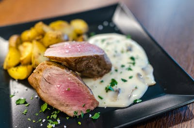

mashed potatoes

DESCRIPTION
The aroma of mashed potatoes will always remind me of dinner at grandma and grandpa's house!
nutrition
226 calories; protein 6g; carbohydrates 36g; fat 7g; cholesterol 15.9mg; sodium 42.9mg
ingredients
- 3 Yukon Gold potatoes, peeled and chopped
- ⅓ cup milk
- ¼ cup sour cream
- salt and ground black pepper to taste
steps
- Place potatoes into a large pot and cover with salted water; bring to a boil. Reduce heat to medium-low and simmer until tender, about 20 minutes. Drain.
- Mash potatoes with milk, sour cream, salt, and pepper in the large pot.